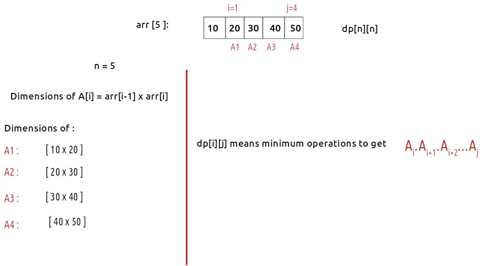
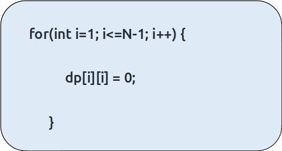
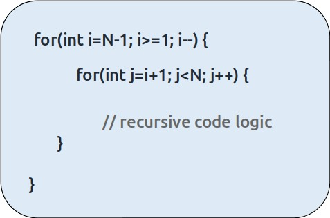

In the previous article, we learned the solution for the problem of “Matrix chain multiplication”. We had discussed the recursive and memoization solution. In this article, we will learn about the tabulation solution.

Disclaimer: Don’t jump directly to the solution, try it out yourself first.
Understanding the dp array
In the memoization approach, we have taken a dp[N][N]. Let us revise it and understand what dp[i][j] means.

As we have to find A1.A2.A3.A4, we will return dp[1][4] as our final answer.
Rules to write tabulation solution from the memoization solution
- Write the base case.
- Write down the changing parameters in terms of loops.
- Write the recursive logic inside the loops.
Base Case
Let us discuss the base case first, in the memoization approach the base case was:
if (i==j) return 0
Now dp[i][i] means minimum operations to get the multiplication of Ai which means a single array which doesn’t mean anything in the context of this problem so we return 0. Therefore we write a loop to set the base case in our dp array as follows:

Changing Parameters
In tabulation, we follow a bottom-up approach that is we start from a smaller problem to the bigger problem, so here we start from (n-1)th matrix and move towards the first matrix i.e
A4_ -> A3_ -> A2_ -> A1_ .
These dashes are the matrix represented by the j pointer.
As j>i, we will start j from i+1 to N-1, thus the pattern of problem-solving becomes:
A4 -> A3.A4 -> A2.A3.A4 -> A1.A2.A3.A4.
This pattern can be achieved by writing the loops in the following way:

Recursive Logic:
Next, we just copy down the recursive logic and modify it as required.
Code:
#include <bits/stdc++.h>
using namespace std;
// Function to find the minimum number of operations for matrix multiplication
int matrixMultiplication(vector<int>& arr, int N) {
// Create a DP table to store the minimum number of operations
vector<vector<int>> dp(N, vector<int>(N, -1));
// Initialize the diagonal elements of the DP table to 0
for (int i = 0; i < N; i++) {
dp[i][i] = 0;
}
// Loop for the length of the chain
for (int len = 2; len < N; len++) {
for (int i = 1; i < N - len + 1; i++) {
int j = i + len - 1;
dp[i][j] = INT_MAX;
// Try different partition points to find the minimum
for (int k = i; k < j; k++) {
int cost = dp[i][k] + dp[k + 1][j] + arr[i - 1] * arr[k] * arr[j];
dp[i][j] = min(dp[i][j], cost);
}
}
}
// The result is stored in dp[1][N-1]
return dp[1][N - 1];
}
int main() {
vector<int> arr = {10, 20, 30, 40, 50};
int n = arr.size();
cout << "The minimum number of operations for matrix multiplication is " << matrixMultiplication(arr, n) << endl;
return 0;
}
Output:
The minimum number of operations are 38000
Time Complexity: O(N*N*N)
Reason: There are N*N states and we explicitly run a loop inside the function which will run for N times, therefore at max ‘N*N*N’ new problems will be solved.
Space Complexity: O(N*N)
Reason: We are using a 2D array ( O(N*N)) space.
import java.util.*;
class TUF {
// Function to recursively calculate the minimum number of operations for matrix multiplication
static int f(int[] arr, int i, int j, int[][] dp) {
// Base condition
if (i == j) {
return 0;
}
// Check if the result is already computed
if (dp[i][j] != -1) {
return dp[i][j];
}
int minOperations = Integer.MAX_VALUE;
// Partitioning loop to find the optimal split point
for (int k = i; k <= j - 1; k++) {
int operations = f(arr, i, k, dp) + f(arr, k + 1, j, dp) + arr[i - 1] * arr[k] * arr[j];
minOperations = Math.min(minOperations, operations);
}
dp[i][j] = minOperations;
return minOperations;
}
// Function to find the minimum number of operations for matrix multiplication
static int matrixMultiplication(int[] arr, int N) {
int[][] dp = new int[N][N];
// Initialize the dp array with -1
for (int row[] : dp) {
Arrays.fill(row, -1);
}
// Initialize the diagonal with 0
for (int i = 1; i < N; i++) {
dp[i][i] = 0;
}
// Fill in the dp array using bottom-up approach
for (int i = N - 1; i >= 1; i--) {
for (int j = i + 1; j < N; j++) {
int minOperations = Integer.MAX_VALUE;
// Partitioning loop to find the optimal split point
for (int k = i; k <= j - 1; k++) {
int operations = dp[i][k] + dp[k + 1][j] + arr[i - 1] * arr[k] * arr[j];
minOperations = Math.min(minOperations, operations);
}
dp[i][j] = minOperations;
}
}
// The result is stored in dp[1][N-1]
return dp[1][N - 1];
}
public static void main(String[] args) {
int[] arr = {10, 20, 30, 40, 50};
int n = arr.length;
System.out.println("The minimum number of operations are " + matrixMultiplication(arr, n));
}
}
Output:
The minimum number of operations are 38000
Time Complexity: O(N*N*N)
Reason: There are N*N states and we explicitly run a loop inside the function which will run for N times, therefore at max ‘N*N*N’ new problems will be solved.
Space Complexity: O(N*N)
Reason: We are using a 2D array ( O(N*N)) space.
def matrix_multiplication(arr):
N = len(arr)
# Initialize a 2D dp list with -1 values
dp = [[-1 for _ in range(N)] for _ in range(N)]
# Initialize the diagonal elements of the dp table to 0
for i in range(N):
dp[i][i] = 0
# Loop through the dp table to calculate the minimum number of operations
for i in range(N - 1, 0, -1):
for j in range(i + 1, N):
mini = float('inf')
# Partitioning loop
for k in range(i, j):
ans = dp[i][k] + dp[k + 1][j] + arr[i - 1] * arr[k] * arr[j]
mini = min(mini, ans)
dp[i][j] = mini
# The result is stored in the top-right corner of the dp table
return dp[1][N - 1]
if __name__ == "__main__":
arr = [10, 20, 30, 40, 50]
print("The minimum number of operations is:", matrix_multiplication(arr))
Output:
The minimum number of operations are 38000
Time Complexity: O(N*N*N)
Reason: There are N*N states and we explicitly run a loop inside the function which will run for N times, therefore at max ‘N*N*N’ new problems will be solved.
Space Complexity: O(N*N)
Reason: We are using a 2D array ( O(N*N)) space.
[tabby title="JavaScript Code"]
function matrixMultiplication(arr) {
const N = arr.length;
// Create a 2D DP array to store the minimum number of operations
const dp = new Array(N).fill(null).map(() => new Array(N).fill(-1));
// Initialize the base case where i == j
for (let i = 0; i < N; i++) {
dp[i][i] = 0;
}
// Loop through the matrix chain sizes starting from the smallest chains
for (let chainSize = 2; chainSize < N; chainSize++) {
for (let i = 1; i < N - chainSize + 1; i++) {
const j = i + chainSize - 1; // Ending index of the chain
dp[i][j] = Infinity; // Initialize dp[i][j] to a large value
// Partitioning loop to find the minimum number of operations
for (let k = i; k < j; k++) {
const operations = dp[i][k] + dp[k + 1][j] + arr[i - 1] * arr[k] * arr[j];
dp[i][j] = Math.min(dp[i][j], operations);
}
}
}
// The result will be stored in dp[1][N-1], which represents the minimum operations for the entire chain
return dp[1][N - 1];
}
// Main function
function main() {
const arr = [10, 20, 30, 40, 50];
const result = matrixMultiplication(arr);
console.log("The minimum number of operations is:", result);
}
// Call the main function
main();
Output:
The minimum number of operations are 38000
Time Complexity: O(N*N*N)
Reason: There are N*N states and we explicitly run a loop inside the function which will run for N times, therefore at max ‘N*N*N’ new problems will be solved.
Space Complexity: O(N*N)
Reason: We are using a 2D array ( O(N*N)) space.
Special thanks to Anshuman Sharma for contributing to this article on takeUforward. If you also wish to share your knowledge with the takeUforward fam, please check out this article. If you want to suggest any improvement/correction in this article please mail us at write4tuf@gmail.com